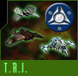
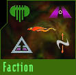

Patrol missions are imperative to local defense within a faction's sphere of influence. These missions are extremely straightforward, in that all you need to do is pass through a series of space locations. Once you have docked, the dock crew will make sure that your ship's flight recorder information is downloaded and sent to central command for processing.
A helpful resource for patrol missions is the in-flight map.
These missions can also be used in conjunction with personal cargo or beacon runs since they are so easy to complete.
| Combat Missions |
|
Although TRI encourages peaceful conflict resolution, the protection of enlisted pilots comes before communication with the conflux. To date no method of communication has succeeded, which leaves no choice but to rip 'em and send them back whenceforth they came. Combat missions are often offensive in nature, and are by far the riskiest of all missions. Once you have accepted a combat mission, you will need to locate and destroy a given number of conflux craft. Combat missions will usually pay better than expected, as each conflux kill will generate a bounty as well as an experience point bonus. |
| Scout Missions | ||||||||||||||||
|
On occasion, you may also receive scouting assignments from your faction, which often consist of snapping a few pictures or scans of an opposing faction's stations. These assignments can be especially risky if other pilots catch on to your intent. In fact, once your mission has been uncovered by enemy pilots, be prepared to face espionage charges (usually dispensed at point blank from the steaming barrel of a serializer.) Before accepting a scout mission, you will want to make sure that you have purchased the necessary mission equipment. Depending on the mission, you will need either a camera or a scanner MODx equipped.
|
 Scout missions are one of the more important missions available from TRI's perspective. These assignments, should you choose to accept them, provide TRI with much needed recon data about spatial anomalies and the like.
Scout missions are one of the more important missions available from TRI's perspective. These assignments, should you choose to accept them, provide TRI with much needed recon data about spatial anomalies and the like.
| T.R.I. Missions |
|
TRI often issues missions which will serve their interest (and supposedly everyone else's...) These missions range from keeping the conflux population down to running large loads of a particular commodity to a TRI certified production facility. TRI missions can be accepted from any station, and are universally uniform. |
| Faction Missions |
|
Faction missions are issued from each empire's home world, and provide specific objectives for their members. Faction missions, when completed, build specific buildings and other useful items for that sector, which adds varying benefits and abilities to the faction's station and or pilots. |